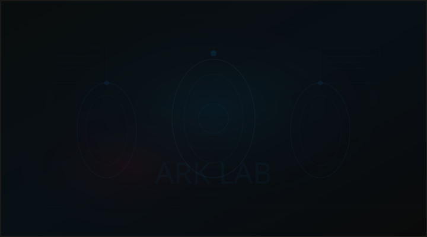

Welcome back to our Resident Evil Requiem Walkthrough. In Part 2, the story picks up immediately after Grace Ashcroft's harrowing escape from the Wrenwood Hotel and Leon S. Kennedy's brutal underground fight (citation:4). This section of the game is widely considered the most intense stretch of the entire campaign, alternating between Grace's vulnerable hospital exploration and Leon's action-heavy boss encounters (citation:3)(citation:15).
If you missed Part 1 of our walkthrough, we recommend reading that first. In this guide, we will cover every section of Part 2 in detail: Grace's West Wing and East Wing hospital exploration (citation:15), Leon's dirt bike boss fight against Victor Gideon (citation:8), the Care Centre investigation (citation:10), the security band puzzle system (citation:11), all collectible locations, and strategies for every encounter. We have also embedded full video walkthroughs from the community's best content creators to help you visualize each section.
- Part 2 Overview: What to Expect
- Grace Ashcroft: Hospital West Wing & East Wing
- Grace: Rhodes Basement & The Girl Fight
- The Care Centre: Dr. Rhodes' Horror
- Security Band Puzzle Guide
- Leon: Victor Gideon Dirt Bike Boss Fight
- Leon: ARK Lab & Grace Rescue
- HUNK Boss Fight Strategy
- All Collectibles in Part 2
- Pro Tips for Part 2
PART 2 OVERVIEW: WHAT TO EXPECT
Resident Evil Requiem's Part 2 is structured around a dual-protagonist format that has become the hallmark of the game's narrative design. You will alternate between Grace Ashcroft 鈥?a journalist investigating the Care Centre 鈥?and Leon S. Kennedy, who is dealing with threats on a completely different front (citation:3).
As the community has noted, the contrast between the two protagonists is stark and intentional. One popular observation puts it perfectly: "Playing as Grace: you're playing a Horror Game. Playing as Leon: the zombies are playing a horror game" (citation:3). This dynamic shift keeps the gameplay fresh and ensures that Part 2 never feels repetitive, even though it is one of the longest sections of the game.
Note: Part 2 features some of the most challenging encounters in the entire game. If you are playing on Hardcore difficulty or above, make sure you have stocked up on herbs and ammunition before progressing past the Wrenwood Hotel section from Part 1 (citation:7).
GRACE ASHCROFT: HOSPITAL WEST WING & EAST WING
After the events at the Wrenwood Hotel, Grace finds herself in a dilapidated hospital facility that serves as one of the game's most atmospheric locations (citation:4)(citation:15). The hospital is divided into two wings 鈥?the West Wing and the East Wing 鈥?each with its own set of puzzles, enemies, and collectibles.
Hospital West Wing
The West Wing is your first area as Grace in Part 2. This section is designed to ease you back into Grace's more vulnerable gameplay style. Unlike Leon, Grace has limited weapons 鈥?in fact, across her entire gameplay section, she can only acquire 3 weapons, 2 of which are pistols (citation:7). This scarcity of firepower makes every encounter tense and forces you to rely on evasion and resource management.
Key items to find in the West Wing:
- First Pistol 鈥?Found in the nurses' station on the ground floor
- West Wing Key 鈥?Located in the director's office (requires solving a combination lock)
- Herb collection 鈥?Several green and red herbs are scattered throughout patient rooms
- Hospital Files (x3) 鈥?Documents that provide backstory on the facility's dark history
Hospital East Wing
The East Wing escalates the horror significantly. Enemy density increases, lighting becomes darker, and the sound design reaches its most unsettling peaks. This is where many players report the highest tension levels in the game.
In the East Wing, there is a safe room near the elevator shaft. Use it frequently. The enemies in this section patrol in patterns 鈥?memorize their routes before committing to a path. Running blindly will attract multiple enemies that Grace cannot handle.
GRACE: RHODES BASEMENT & THE GIRL FIGHT
After clearing both hospital wings, Grace descends into the Rhodes Basement, which serves as the transition between the hospital exploration and the Care Centre storyline. Community breakdowns have mapped out Grace's gameplay as essentially three key areas: "Rhodes + Basement + Girl fight is basically her entire gameplay" (citation:17).

The basement introduces several new enemy types that are faster and more aggressive than anything Grace has faced so far. Ammunition conservation is absolutely critical 鈥?remember, you only have pistols at this point, and ammo pickups are sparse.
The Girl Fight 鈥?Boss Encounter
The culmination of Grace's gameplay section is the Girl Fight 鈥?a disturbing boss encounter that takes place in the basement's deepest chamber. This is the only boss fight that Grace participates in throughout the entire game (citation:7), so Capcom clearly designed it to be memorable.
Boss Strategy: The Girl Fight is primarily about evasion and timing. The boss has three attack phases, each faster than the last. Use the environmental pillars for cover, and only fire when the boss is recovering from a lunging attack. Headshots deal bonus stagger damage, creating a 3-second window for follow-up shots.
THE CARE CENTRE: DR. RHODES' HORROR
The Care Centre is one of the most disturbing locations in Resident Evil Requiem. Described as a facility "run by Dr. Rhodes" (citation:10), this section reveals the full scope of the experiments being conducted on patients. The environmental storytelling here is exceptional 鈥?medical equipment, patient records, and biological specimens paint a picture of systematic cruelty.
The Care Centre section transitions the story from Grace's personal investigation into the larger conspiracy that connects both protagonists. Pay close attention to the files and documents found here 鈥?they contain critical lore information that ties into the game's multiple endings (see our All Endings Explained guide for the full breakdown).
SECURITY BAND PUZZLE GUIDE
One of the more complex puzzles in Part 2 involves the security band system. You need to upgrade your security clearance to access restricted areas throughout the hospital and Care Centre. Here is the step-by-step solution:
- Obtain Level 1 Security Band 鈥?Found in the West Wing nurses' station after solving the organ placement puzzle
- Place the organs in the correct order in the specimen room 鈥?the correct sequence is hinted at by the numbered jars on the shelf
- Kill the zombie that spawns after placing the organs (the Requiem Shot makes this easiest) (citation:11)
- Pick up the Level 2 Security Band from the zombie's body
- Run to the isolation ward and office 鈥?pick up the herb in the office and examine the files for the Level 3 upgrade code (citation:11)
The organ placement puzzle stumps many players. If you are stuck, look for the color-coded labels on each jar. The order follows the sequence displayed on the whiteboard in the adjacent observation room. Take a screenshot of the whiteboard before leaving the room 鈥?the information is not saved in your file inventory.
LEON: VICTOR GIDEON DIRT BIKE BOSS FIGHT
While Grace is navigating the horrors of the hospital, Leon faces his own set of challenges. The highlight of Leon's Part 2 gameplay is the Victor Gideon dirt bike boss fight 鈥?one of the most cinematic encounters in the entire Resident Evil franchise (citation:8).
Victor Gideon Boss Strategy
This boss fight is unique because it combines vehicular combat with traditional Resident Evil mechanics. Here is how to survive it:
- Phase 1: Gideon charges on his bike in straight lines. Strafe to the side and shoot his fuel tank when he passes. Three hits to the tank trigger Phase 2.
- Phase 2: Gideon dismounts and fights on foot with a modified chainsaw. Keep distance and use shotgun blasts to stagger him. Aim for the exposed fuel canister on his back.
- Phase 3: The arena catches fire, limiting your movement space. Gideon becomes faster and more aggressive. Use the remaining cover objects and time your shots carefully. Magnum shots to the head deal massive damage.
Ammo Recommendation: Bring at least 30 handgun rounds, 10 shotgun shells, and save your magnum ammo exclusively for Phase 3. If you are low on supplies, there is a hidden ammo cache behind the overturned truck in the southeast corner of the arena.
LEON: ARK LAB & GRACE RESCUE
Following the Victor Gideon fight, Leon's story converges with Grace's at the ARK Lab (citation:6). This is a pivotal story moment where the two protagonists finally meet and the full scope of the conspiracy is revealed.

The ARK Lab section can be broken down into approximately three rooms for Grace's gameplay portion (citation:17). Leon, on the other hand, faces significantly more combat encounters in this section. The lab is heavily guarded by enhanced B.O.W.s that require precise aiming and smart resource management.
During the Grace rescue sequence, you will need to navigate the lab's security systems while protecting Grace from incoming threats. This section plays out as a semi-scripted action sequence with QTE elements 鈥?stay alert and follow the on-screen prompts.
HUNK BOSS FIGHT STRATEGY
The HUNK Boss Fight is one of Part 2's most challenging and talked-about encounters (citation:6)(citation:9). Community discussion around this fight has been intense, with many players noting the difficulty spike compared to earlier encounters.
HUNK Boss Strategy Breakdown
HUNK is a uniquely challenging boss because he fights like a trained operative, not a monster. He uses cover, flanking maneuvers, and tactical grenades. Here is how to take him down:
- Respect his range: HUNK's accuracy at medium range is devastating. Either fight at close range (shotgun) or at extreme distance (rifle). The middle ground is a death zone.
- Watch for grenades: HUNK throws flashbangs and frag grenades. When you see the grenade animation, sprint perpendicular to your current position.
- Exploit reload windows: After HUNK fires his submachine gun burst, there is a 2-second reload window. This is your primary damage opportunity.
- Phase transitions: At 50% health, HUNK activates an active camouflage system that makes him partially invisible. Listen for his footsteps and watch for the shimmer effect.
HUNK's appearance in Requiem connects to his long history in the Resident Evil franchise. Known as "Mr. Death," HUNK has survived every mission he has been deployed on. His presence in the ARK Lab suggests deep Umbrella/Neo-Umbrella connections that tie into the game's overarching conspiracy.
ALL COLLECTIBLES IN PART 2
Part 2 contains a significant number of collectibles. For 100% completion, you will need to find every item listed below. Use this checklist as you progress (citation:14):
| Collectible | Quantity | Location Notes |
|---|---|---|
| Mr. Raccoons | 4 | Hospital West Wing (1), East Wing (1), Care Centre (1), ARK Lab (1) |
| Files | 8 | Scattered across all areas 鈥?check desks, shelves, and patient rooms |
| Safes | 2 | Hospital Director's Office, Care Centre Storage Room |
| BSAA Containers | 2 | Rhodes Basement, ARK Lab Sub-level |
| Antique Coins | 3 | Hospital Chapel, Care Centre Garden, ARK Lab Break Room |
| Weapons | 3 (Grace) | 2 pistols + 1 special weapon from the Girl Fight |
| Shadow Files | 2 | Hidden in the Care Centre and ARK Lab (required for Secret Ending) |
Some collectibles become inaccessible after specific story triggers. The most common missable item is the Mr. Raccoon in the Hospital Chapel 鈥?once you trigger the basement descent, the chapel is permanently locked. Make sure to explore every room before progressing the story (citation:14).
PRO TIPS FOR PART 2
Here are our top tips for conquering Part 2 efficiently:
- Save often during Grace's sections. With only 3 weapons and limited ammo, a single mistake can cost you 20-30 minutes of progress. Use typewriters whenever you find them.
- Craft ammunition before boss fights. The crafting system in Requiem is generous with components 鈥?use workbenches to convert gunpowder into your preferred ammo type before every major encounter.
- Explore every room. Part 2 contains the highest density of collectibles in the game. Many are hidden behind breakable objects or in rooms that appear to be dead ends (citation:14).
- Upgrade your shotgun first. Leon's shotgun is the most versatile weapon for Part 2's boss fights. Prioritize damage upgrades, then capacity.
- Listen to the audio design. Requiem's sound design is not just atmospheric 鈥?it is gameplay-relevant. Enemy growls indicate nearby threats, and subtle music changes signal boss encounters. Play with headphones for the best experience.
For completionists: After finishing Part 2, make a separate save file before the final chapter. This allows you to replay specific sections for missed collectibles without starting a New Game+. See our All Endings Explained guide for the optimal playthrough order.
FINAL THOUGHTS
Resident Evil Requiem Walkthrough Part 2 is the heart of the game. It is where the dual-protagonist structure truly shines, the boss encounters reach their peak intensity, and the conspiracy story deepens in ways that longtime fans of the franchise will appreciate. Grace Ashcroft's vulnerability contrasts beautifully with Leon's combat prowess, creating a gameplay rhythm that keeps you on edge throughout (citation:3).
Whether you are here for the collectibles, the boss strategies, or just trying to survive the hospital, we hope this guide has helped you navigate Part 2's challenges. Bookmark this page and check back 鈥?we update our guides regularly as new discoveries are made by the community.
Looking for more? Check out our other Resident Evil Requiem guides:
- Walkthrough Part 1: All Chapters, Puzzles & Boss Strategies
- Leon Nurse Scene Explained 鈥?All Theories Analyzed
- Beginner Guide: 15 Essential Tips for New Players
- All Endings Explained: Secret Ending & Lore Breakdown